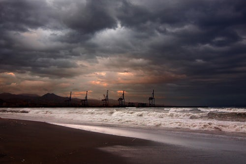
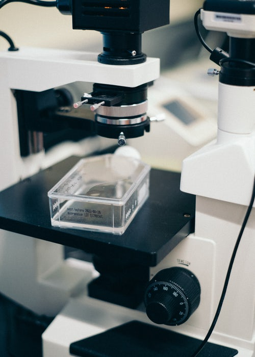
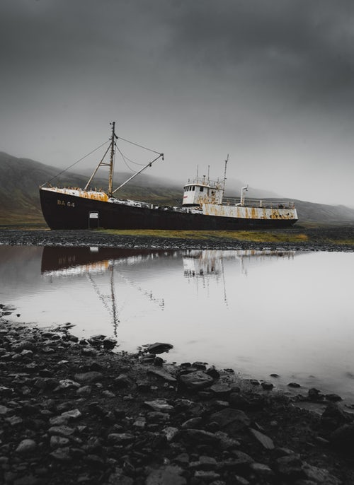

Octopus Deep Sea is a 5-year-old firm whose mission is to "Create a deeper knowledge of the sea". Based in Liverpool, the firm founded by co-Founder and CEO Georgette Kuhl is a growing company which has expanded in 4 fields of expertise since its inception.
Oil prospection is an important part of Octopus Deep Sea. What we considered as a one-time job when we worked with a big oil company 4 years ago, has since become one of our most important activities. It is an amazing way for us to work together with oil companies by helping them find huge and unknown oil sources. We now work with big oil companies on a yearly basis around the globe with their teams and our team of experts, sharing our respective skills and technical expertise.

Scientific Research

Octopus Deep Sea has the chance to be working with well-known universities and research labs around the world since its creation. Our numerous partnerships have helped discover already 23 species, including 3 in Manille Trench and Ryukyu Trench in 2014 and 2016, and raise the importance of preserving the biodiversity in our oceans. Scientific expeditions often include sampling and photography of unknown species with university teams composed of Ph.D. students and professors, in addition to our employees.
Wreck Exploration
Wreck exploration is subject to many adventurer's dreams. Our firm's photography and submarine teams work with associations to explore historical wrecks, with the main goal of educating our society on the secrets of oceans. Our most famous exploration is the Bismarck wreck, which was the 1st Kriegsmarine’s ironclad during the WWII. Sunk in 1941, it's one of the many case studies for oceanographic institutes today. For technical equipment reasons, we are not able to go deeper than 5000 meters below sea level. Most people never go below 4000 meters so the additional kilometer helps us discover a significant percentage of remaining untouched wrecks.

Accident Assistance
Our last pillar of experience is Accident assistance. In case of an accident, we can provide deep sea assistance to find wrecks or specific things like lost freight or wreckage. In most cases, we help airlines or governments find for example flight recorders in wrecks. In some circumstances, we can provide a 24/7 accident assistance to help our clients during an accident.